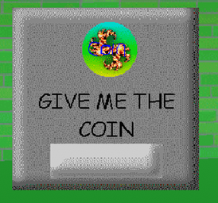

"Super Coin! Machine" is the Safe replacement in "ThatCoolModderGuys APARTMENT!"(/"TCMG").
Aliases
Super Coin! Machine, SCM, GIVE ME THE COIN.
Appearance
Super Coin! Machine appears as a gray cube with a lighter gray delivery chute. It has text on it that reads; "GIVE ME THE COIN", and an image of said coin above.
Gallery

Trivia
Super Coin! Machine cannot speak.
Super Coin! Machine was built by ThatCoolModderGuy.